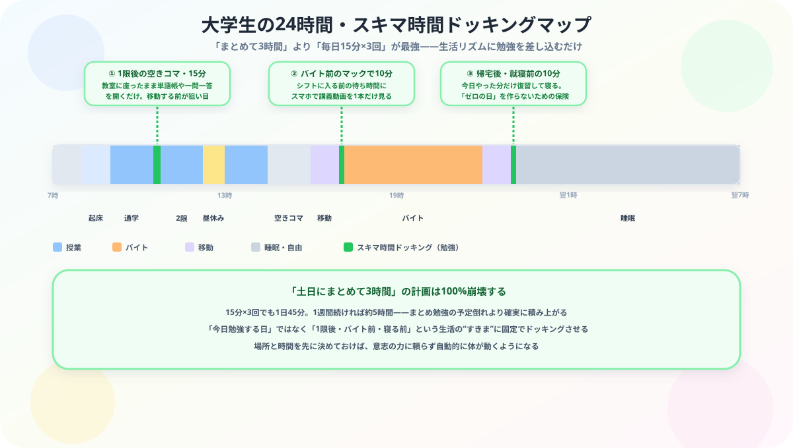

大学生が資格勉強を続ける方法｜授業・バイト・就活と両立するコツ【2026年版】
こんにちは、大谷です！
「資格の勉強を始めたけれど、大学の授業やバイト、就活が忙しくて全然続かない……」と、机の前でサボってしまった自分に罪悪感を抱えてフリーズしていませんか？（笑）
現役の関西の大学3回生として、ヘビーな講義やバイトをこなしながら毎日狂ったように会計の猛勉強を両立させている僕の視点から、根性に一切頼らずに勉強を「歯磨きレベルの日常」に変える【無敵の大学生特化型・継続ハック】を、同じキャンパスライフを送る仲間の目線で熱くナビゲートします！
また、記事の末尾のほうにある【いいねボタン】をポチッと押してもらえると、めちゃくちゃ嬉しいです！
「資格の勉強を始めても、授業・バイト・就活の忙しさで3日で止まってしまう」という大学生向けに、根性論に頼らない継続の仕組みと、大学生ならではの3つの壁への対処法をまとめました。
大学生が資格勉強で止まりやすいのは普通
まず前提として、大学生が資格勉強を途中で止めやすいのは珍しいことではありません。むしろ、時間があるように見えるからこそ、後回しになりやすいです。
「今日は授業だけだからあとでやろう」「バイトのない日にまとめてやろう」と思っているうちに、気づけば何日も空いてしまうことがあります。
大学生が資格勉強を続けるコツ
就活で使いたいのか、将来の業界理解のためか、ただ何となくなのかで続きやすさはかなり変わります。理由がぼんやりしていると止まりやすいです。
大学生は「今日は空いてるからまとめてやる」に流れやすいですが、それだと波が大きくなります。短くても毎日触る方が強いです。
1時間勉強ではなく、10分、1問、1ページでもいいので、空き時間に入る大きさにすると続きやすくなります。
月曜にやる、ではなく、1限後の30分、バイト前の15分など、時間帯で固定した方が習慣になりやすいです。
大学生の資格勉強は成果が見えにくく、途中で「何やってるんだろう」となりやすいです。記録や達成率が見えるとかなり違います。
大学生が止まりやすい3つの壁
1. 予定が毎週変わる
授業の時間割、バイト、サークル、就活イベントで、毎週のリズムが一定ではありません。これが資格勉強の習慣化をかなり難しくします。
2. 長期目標に慣れていない
資格勉強は数か月以上の継続になることが多いですが、大学生はまだ「長い目で積み上げる」感覚がつかみにくいことがあります。
3. 周りとの温度差
友人が遊びや就活を優先している中で、自分だけ資格勉強を続けるのは地味に孤独です。ここも止まりやすさにつながります。
なぜ「毎日少し」が「たまに集中」より効くのか、身近な話で理解する
「土日にまとめてやる」より「毎日少しずつ」の方が続くと言われても、感覚的に納得しづらい人もいると思います。これは根性論ではなく、身近な例で説明できる現象です。
観葉植物の水やりをイメージしてください。月に1回、思い出したときに大量の水をあげるより、少量でも毎日水をあげた方が植物は元気に育ちますよね。勉強も同じで、脳という土に知識という水を染み込ませるには、「一度に大量」より「頻度高く少量」の方が定着しやすいんです。
これをバイト先の新人教育で例えると、もっとイメージしやすくなります。初日に丸1日かけてマニュアルを全部詰め込むより、シフトに入るたびに少しずつ業務を覚えていく方が、実際の仕事は身につきますよね。心理学ではこれを「分散学習効果」と呼びます。人間の記憶は、一度に大量に触れるより、間隔を空けて繰り返し触れる方が定着しやすいという性質があります。土日にまとめて3時間やる計画が崩壊しやすいのは、意志が弱いからではなく、そもそも記憶の仕組みに逆らった計画だったから、と理解しておくと自分を責めずに済みます。
授業・バイト・就活と両立するには

- 授業日: 空きコマや1限後に短くやる
- バイト日: 勉強ゼロではなく、5〜10分だけ触る
- 就活期: 資格を止めるのではなく、量を落として接点だけ維持する
ここで大事なのは、「全部ちゃんとやる」ではなく、「切らないこと」です。大学生の資格勉強は、完璧さより接触回数の方が大事です。
就活を意識する大学生に伝えたいこと
就活で資格が役立つのは事実ですが、資格だけで勝てるわけではありません。大事なのは、なぜその資格を選んだのか、どう続けたのか、そこから何を得たのかを話せることです。
大学生が資格勉強を立て直す方法
1. まずは1週間だけ考える
1か月の計画だと重いので、まずは次の7日だけ回せる形に落とすのが現実的です。
2. いきなり元の量に戻さない
一度止まったあとに、以前のペースへそのまま戻すのはかなりしんどいです。半分以下から再開するくらいでちょうどいいです。
3. 勉強を “イベント” ではなく “日常” にする
大学生は「今日はやる日」と構えやすいですが、続けるにはもっと軽く生活に入れる方が強いです。
継続を邪魔する3つの落とし穴
- 完璧な計画を立てすぎて、崩れた瞬間に全部やめてしまう：細かく計画を立てるほど、予定通りいかなかったときの挫折感が大きくなります。計画は「大まかな方向性」程度にとどめ、崩れることを前提に立てましょう。
- 1日サボっただけで「もう無理だ」と挫折したと思い込む：連続記録が途切れることを過度に恐れると、1日抜けただけで再開のハードルが一気に上がります。大事なのは連続日数ではなく、長期的にトータルでどれだけ接触したかです。
- 就活期に資格勉強を完全にゼロにしてしまう：忙しさで学習量を落とすのは自然ですが、完全に接点をゼロにすると、就活が落ち着いた後の再開が想像以上に重くなります。1日5分でも触れ続けて「感覚」だけは維持しておきましょう。
⚔ 大学生の資格勉強も、仕組みで続けやすくする
授業、バイト、就活の中で続けるには、気合いより仕組みが必要です。
Study Questなら、毎日の目標宣言・記録・進捗を見える化しながら積み上げられます。
まとめ
- 大学生が資格勉強を続けにくいのは普通
- 理由を明確にし、短くても毎日触ることが大事
- 授業やバイトに入る量まで小さくすると続けやすい
- 就活期もゼロにせず、接点だけ維持すると戻りやすい
誘惑の多いキャンパスライフの中で、一歩を踏み出しているあなたへ
授業もバイトも就活もある中で、それでも資格勉強に手を伸ばしている時点で、あなたはもう十分すごいです。完璧じゃなくていい、切らずに続けるだけでいい。同じキャンパスライフを送る先輩として、心から応援しています。この記事が「あ、そういうことか！」につながったら、僕の執筆のモチベーション維持のために、この下にある【いいねボタン】をポチッと押してもらえると、めちゃくちゃ嬉しいです！
Study Questで今日の学習時間を記録して、一緒に「歯磨きレベルの日常」を積み上げていきましょう。